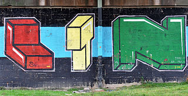

In Europe, community cleaning squads have responded to graffiti, in some cases with reckless abandon, as when in 1992 in France a local Scout group, attempting to remove modern graffiti, damaged two prehistoric paintings of bison in the Cave of Mayrière supérieure near the French village of Bruniquel in Tarn-et-Garonne, earning them the 1992 Ig Nobel Prize in archeology.
In September 2006, the European Parliament directed the European Commission to create urban environment policies to prevent and eliminate dirt, litter, graffiti, animal excrement, and excessive noise from domestic and vehicular music systems in European cities, along with other concerns over urban life.
The Anti-Social Behaviour Act 2003 became Britain's latest anti-graffiti legislation. In August 2004, the Keep Britain Tidy campaign issued a press release calling for zero tolerance of graffiti and supporting proposals such as issuing "on the spot" fines to graffiti offenders and banning the sale of aerosol paint to anyone under the age of 16. The press release also condemned the use of graffiti images in advertising and in music videos, arguing that real-world experience of graffiti stood far removed from its often-portrayed 'cool' or 'edgy' image.
To back the campaign, 123 MPs (including then Prime Minister Tony Blair), signed a charter which stated: "Graffiti is not art, it's crime. On behalf of my constituents, I will do all I can to rid our community of this problem." However, since the early 1990s, the British graffiti scene has been struck by self-titled "art terrorist" Banksy, who has revolutionized the style of UK graffiti (bringing to the forefront stencils to aid the speed of painting), as well as the content; making his work largely satirical of the sociological state of cities, or the political climate of war, often using monkeys and rats as motifs.
In the UK, city councils have the power to take action against the owner of any property that has been defaced under the Anti-social Behaviour Act 2003 (as amended by the Clean Neighbourhoods and Environment Act 2005) or, in certain cases, the Highways Act. This is often used against owners of property that are complacent in allowing protective boards to be defaced so long as the property is not damaged.
In July 2008, a conspiracy charge was used to convict graffiti artists for the first time. After a three-month police surveillance operation, nine members of the DPM crew were convicted of conspiracy to commit criminal damage costing at least £1 million. Five of them received prison sentences, ranging from eighteen months to two years. The unprecedented scale of the investigation and the severity of the sentences rekindled public debate over whether graffiti should be considered art or crime.
In July 2008, a conspiracy charge was used to convict graffiti artists for the first time. After a three-month police surveillance operation,[90] nine members of the DPM crew were convicted of conspiracy to commit criminal damage costing at least £1 million. Five of them received prison sentences, ranging from eighteen months to two years. The unprecedented scale of the investigation and the severity of the sentences rekindled public debate over whether graffiti should be considered art or crime.[91]
Some councils, like those of Stroud and Loerrach, provide approved areas in the town where graffiti artists can showcase their talents, including underpasses, car parks, and walls that might otherwise prove a target for the 'spray and run.'
In Budapest, Hungary both a city-backed movement called I Love Budapest and a special police division tackle the problem, including the provision of approved areas.